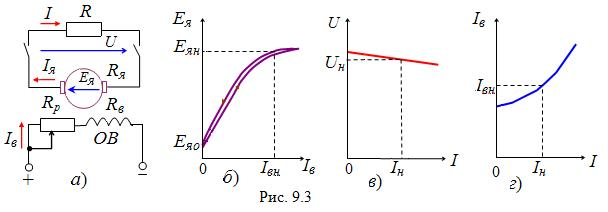

Рассмотрим работу ГПТ независимого возбуждения (рис. 9.3, а). Его обмотка возбуждения ОВ подключается к источнику постоянного тока, а к выводам обмотки приведенного во вращение якоря присоединяется нагрузка R. Тогда под действием ЭДС якоря в цепи нагрузки возникает ток I. Проводники с током обмотки якоря находятся в магнитном поле, созданном МДС обмотки возбуждения, поэтому в соответствии с законом Ампера возникают электромагнитные силы и электромагнитный момент Mэм, направленный противоположно моменту приводного двигателя. Таким образом, при работе машины в режиме генератора создаётся противодействующий электромагнитный момент Mэм, который должен быть преодолен первичным двигателем.
Недостатком ГПТ независимого возбуждения является потребность в постороннем источнике постоянного напряжения для создания магнитного потока Фв машины.
